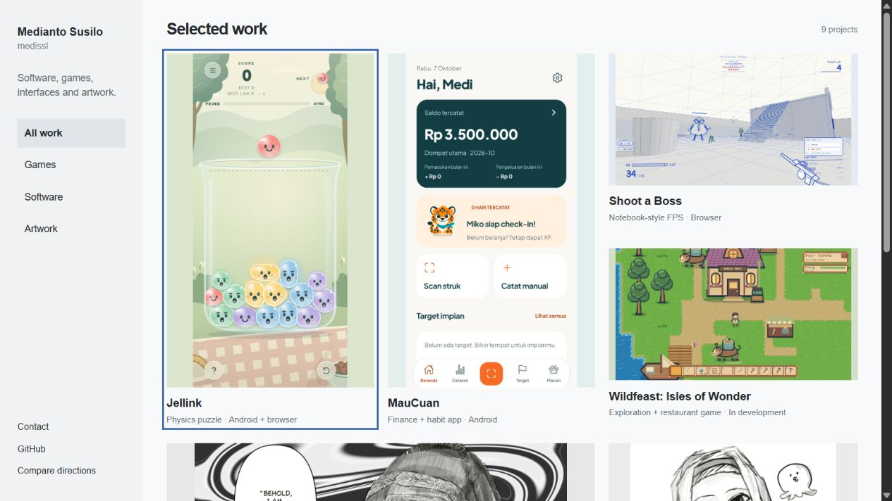
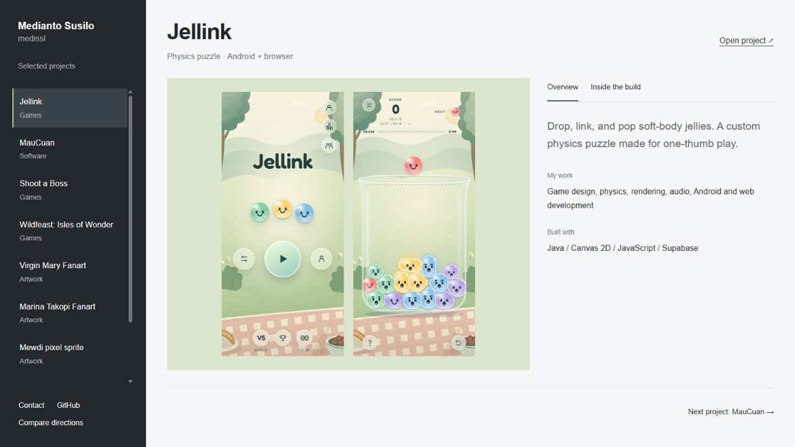
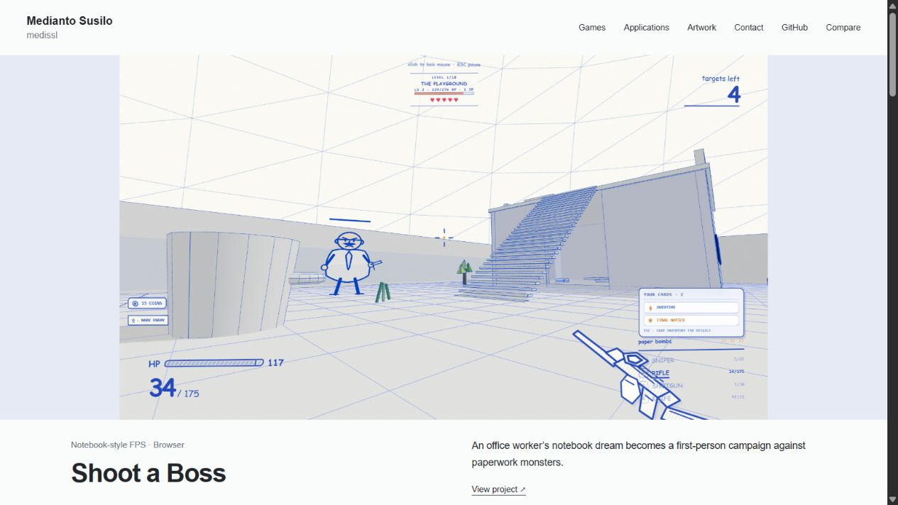

Local concept review · Not a production redesign
Three ways into the work.
Latest: interactive multimedia exhibition, connected About and project pages
New: open refined A — projects first, separate artwork, verified SAKIKO media
Real media from Jellink, MauCuan, Shoot a Boss, Wildfeast, Rundori and the published art collection.

A. Visual collection — recommendedSee the breadth first. Filter and open projects from a media-led contact sheet.
B. Project workbenchSelect one build. Inspect its real screens, your contribution and the implementation.
C. Guided project reelFollow a continuous sequence of projects. Expand each project’s process when interested.These prototypes use static local data. They do not read private customer data, connect to the CMS, or change project records.